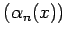
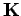
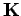
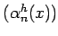

Inhalt Index DeskTop Bronstein

 Lineare Integralgleichungen Fredholmsche Integralgleichung 1. Art Konstruktion zweier spezieller Orthonormalsysteme zu einem gegebenen Kern
Lineare Integralgleichungen Fredholmsche Integralgleichung 1. Art Konstruktion zweier spezieller Orthonormalsysteme zu einem gegebenen Kern


Im allgemeinen ist die Auflösung des unter Zurückführung der Integralgleichung auf ein lineares Gleichungssystem aufgestellten unendlichen linearen Gleichungssystems nicht einfacher als die Lösung des Ausgangsproblems. Durch geeignete Wahl der Orthonormalsysteme  und  kann jedoch die Struktur der Kernmatrix  so beeinflußt werden, daß sich das Gleichungssystem einfach lösen läßt. Das folgende Verfahren konstruiert zwei Orthonormalsysteme, die eine Kernmatrix liefern, deren Koeffizienten Kij nur für i = j und i = j+1 ungleich Null sind.
kann jedoch die Struktur der Kernmatrix  so beeinflußt werden, daß sich das Gleichungssystem einfach lösen läßt. Das folgende Verfahren konstruiert zwei Orthonormalsysteme, die eine Kernmatrix liefern, deren Koeffizienten Kij nur für i = j und i = j+1 ungleich Null sind.
Mit der Methode des voranstehenden Abschnittes werden zunächst zwei orthonormierte Lösungssysteme bzw.  der homogenen Integralgleichung bzw. der dazu transponierten homogenen Gleichung bestimmt, d.h., alle Lösungen dieser zwei Integralgleichungen lassen sich durch Linearkombination der Funktionen bzw. darstellen. Diese Orthonormalsysteme sind nicht vollständig. Mit dem folgenden Verfahren werden diese Systeme durch schrittweises Hinzufügen von Funktionen , zu vollständigen Orthonormalsystemen ergänzt.